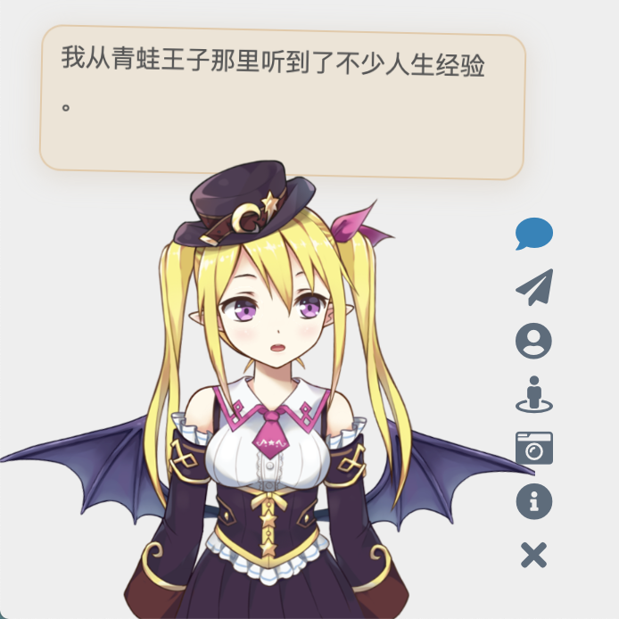
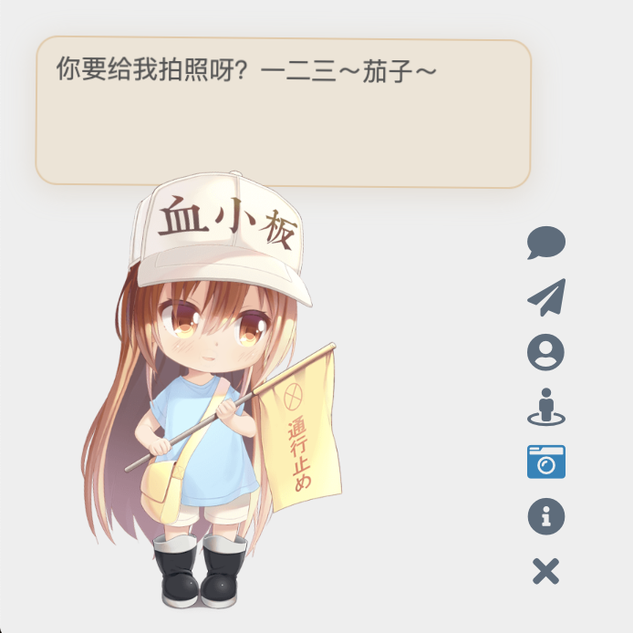

Live2D Widget


Features
- Add Live2D widget to web page
- Lightweight, with no runtime dependencies other than Live2D Cubism Core
- Core code is written in TypeScript, making it easy to integrate



Note: The character models above are for demonstration purposes only and are not included in this repository.
You can also check out example web pages:
- Check the effect in the lower left corner of Mimi’s Blog
- demo/demo.html to demonstrate basic functionality
- demo/login.html to imitate the login interface of NPM
Usage
If you are a beginner or only need the basic functionality, you can simply add the following line of code to the head or body of your HTML page to load the widget:
<script src="https://fastly.jsdelivr.net/npm/live2d-widgets@1.0.0/dist/autoload.js"></script> |
The placement of the code depends on how your website is built. For example, if you are using Hexo, you need to add the above code to the template file of your theme. The modification process is similar for pages generated using various template engines.
If your website uses PJAX, since the widget does not need to be refreshed on every page, make sure to place the script outside the PJAX refresh area.
However, we strongly recommend configuring the widget yourself to make it more suitable for your website!
If you are interested in customizing the widget, please refer to the detailed instructions below.
Configuration
You can refer to the source code of dist/autoload.js to see the available configuration options. autoload.js will automatically load two files: waifu.css and waifu-tips.js. waifu-tips.js creates the initWidget function, which is the main function for loading the widget. The initWidget function accepts an object-type parameter as the configuration for the widget. The following are the available options:
| Option | Type | Default Value | Description |
|---|---|---|---|
waifuPath |
string |
https://fastly.jsdelivr.net/npm/live2d-widgets@1/dist/waifu-tips.json |
Path to the widget resources, can be modified |
cdnPath |
string |
https://fastly.jsdelivr.net/gh/fghrsh/live2d_api/ |
CDN path |
cubism2Path |
string |
https://fastly.jsdelivr.net/npm/live2d-widgets@1/dist/live2d.min.js |
Path to Cubism 2 Core |
cubism5Path |
string |
https://cubism.live2d.com/sdk-web/cubismcore/live2dcubismcore.min.js |
Path to Cubism 5 Core |
modelId |
number |
0 |
Default model id |
tools |
string[] |
see autoload.js |
Buttons of the loaded tools |
drag |
boolean |
false |
Make the widget draggable |
logLevel |
string |
error |
Log level: error, warn, info, trace |
Model Repository
This repository does not include any models. You need to configure a separate model repository and set it via the cdnPath option.
Older versions of the initWidget function supported the apiPath parameter, which required users to set up their own backend. You can refer to live2d_api for details. The backend interface would integrate model resources and dynamically generate JSON description files. Since version 1.0, these features have been implemented on the frontend, so a dedicated apiPath is no longer required. All model resources can be provided statically. As long as model_list.json and the corresponding textures.cache for each model exist, features such as outfit changing are supported.
Development
If the options provided in the “Configuration” section above are not enough to meet your needs, you can make modifications yourself. The directory structure of this repository is as follows:
srcdirectory contains the TypeScript code for each component, e.g. the button and dialog box.builddirectory contains files generated from the source code insrc(please do not modify them directly!)distdirectory contains the files that can be directly used on web pages after packaging, including:autoload.jsis used to automatically load other resources such as style sheets.waifu-tips.jsis automatically generated bybuild/waifu-tips.jsand it is not recommended to modify it directly.waifu.cssis the style sheet for the widget.waifu-tips.jsondefines the triggering conditions (selector, CSS selector) and the displayed text when triggered (text).
By default, the CSS selector rules inwaifu-tips.jsonare effective for the Hexo NexT theme, but you may need to modify or add new content to make it suitable for your own website.
Warning: The content inwaifu-tips.jsonmay not be suitable for all age groups or appropriate to access during work. Please ensure their suitability when using them.
To deploy the development testing environment of this project locally, you need to install Node.js and npm, then execute the following commands:
git clone https://github.com/stevenjoezhang/live2d-widget.git |
If you need to use Cubism 3 or newer models, please download and extract the Cubism SDK for Web separately into the src directory, for example, src/CubismSdkForWeb-5-r.4. Due to Live2D license agreements (including the Live2D Proprietary Software License Agreement and Live2D Open Software License Agreement), this project cannot include the source code of Cubism SDK for Web.
If you only need to use Cubism 2 models, you can skip this step. The code in this repository complies with the Redistributable Code terms of the Live2D license agreements.
Once completed, use the following command to compile and bundle the project.
npm run build |
The TypeScript code in the src directory is compiled into the build directory, and the code in the build directory is further bundled into the dist directory.
To support both Cubism 2 and Cubism 3 (and newer) models while minimizing code size, Cubism Core and related code are loaded dynamically based on the detected model version.
Deploy
After making modifications locally, you can deploy the modified project on a server or load it via a CDN. To make it easier to customize, you can fork this repository and push your modified content to your own repository using git push.
Using jsDelivr CDN
To load forked repository via jsDelivr, the usage method becomes:
<script src="https://fastly.jsdelivr.net/gh/username/live2d-widget@latest/autoload.js"></script> |
Replace username with your GitHub username. To ensure the content of the CDN is refreshed correctly, you need to create a new git tag and push it to the GitHub repository. Otherwise, @latest in the URL will still point to the previous version. Additionally, CDN itself has caching, so the changes may take some time to take effect.
Using Cloudflare Pages
You can also deploy using Cloudflare Pages. Create a new project in Cloudflare Pages and select your forked repository. Then, set the build command to npm run build. Once configured, Cloudflare Pages will automatically build and deploy your project.
Self-host
Alternatively, you can directly host these files on your server instead of loading them via CDN.
- Clone the forked repository onto your server, or upload the local files to the website directory on the server using
ftpor similar methods. - If you are deploying a static blog using Hexo or similar tools, place the code of this project in the blog’s source file directory (e.g., the
sourcedirectory). When redeploying the blog, the relevant files will be automatically uploaded to the corresponding paths. To prevent these files from being incorrectly modified by Hexo plugins, you may need to setskip_render.
Afterwards, the entire project can be accessed through your domain name. You can try opening the autoload.js and live2d.min.js files in your browser and confirm that their content is complete and correct.
If everything is normal, you can proceed to modify the constant live2d_path in autoload.js to the URL of the dist directory. For example, if you can access live2d.min.js through the following URL:
https://example.com/path/to/live2d-widget/dist/live2d.min.js |
then modify the value of live2d_path to:
https://example.com/path/to/live2d-widget/dist/ |
Make sure to include the trailing / in the path.
Once done, add the following code to the interface where you want to add the live2d-widget:
<script src="https://example.com/path/to/live2d-widget/dist/autoload.js"></script> |
This will load the widget.
Thanks
Thanks to BrowserStack for providing the infrastructure that allows us to test in real browsers!
Thanks to jsDelivr for providing public CDN service.
Thanks fghrsh for providing API service.
Thanks to Hitokoto for providing the sentence API.
When you click on the paper airplane button of the virtual assistant, a hidden surprise will appear. This feature is from WebsiteAsteroids.
More
The code is modified based on this blog post:
https://www.fghrsh.net/post/123.html
For more information, you can refer to the following links:
https://nocilol.me/archives/lab/add-dynamic-poster-girl-with-live2d-to-your-blog-02
https://github.com/guansss/pixi-live2d-display
For more models:
https://github.com/zenghongtu/live2d-model-assets
In addition to that, there are desktop versions available:
https://github.com/TSKI433/hime-display
https://github.com/amorist/platelet
https://github.com/akiroz/Live2D-Widget
https://github.com/zenghongtu/PPet
https://github.com/LikeNeko/L2dPetForMac
And also Wallpaper Engine:
https://github.com/guansss/nep-live2d
Official Live2D websites:
https://www.live2d.com/en/
License
This repository does not contain any models. The copyrights of all Live2D models, images, and motion data used for demonstration purposes belong to their respective original authors. They are provided for research and learning purposes only and should not be used for commercial purposes.
The code in this repository (excluding parts covered by the Live2D Proprietary Software License and the Live2D Open Software License) is released under the GNU General Public License v3
http://www.gnu.org/licenses/gpl-3.0.html
Please comply with the relevant licenses when using any Live2D-related code:
License for Live2D Cubism SDK 2.1:
Live2D SDK License Agreement (Public)
License for Live2D Cubism SDK 5:
Live2D Cubism Core is provided under the Live2D Proprietary Software License.
https://www.live2d.com/eula/live2d-proprietary-software-license-agreement_en.html
Live2D Cubism Components are provided under the Live2D Open Software License.
https://www.live2d.com/eula/live2d-open-software-license-agreement_en.html
Update Log
Starting from January 1, 2020, this project no longer depends on jQuery.
Starting from November 1, 2022, this project no longer requires users to separately load Font Awesome.